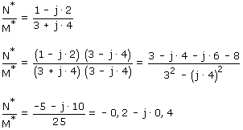
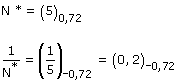
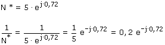

|
Inverso
Forma binómica:
Se expresa el inverso como una fracción, se multiplican nume-rador
y denominador por el conjugado del denominador y se sim-plifica

Forma módulo-argumental
El módulo es la inversa del módulo del complejo dado y el
argu-mento es el opuesto

Forma exponencial
Se aplican las reglas convencionales

|